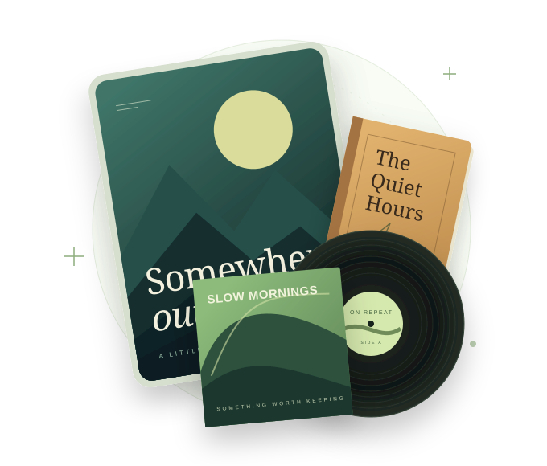

Movies & shows
A browser experience for your video library, with artwork, metadata, and playback progress.
Your next movie night starts here.A LizardByte project · In development
A self-hosted media server for watching, listening, and reading. Built in Rust, and still taking shape.
Koko is in early development. Features and interfaces are evolving.

A collection of your own
Koko is taking shape around your library, from the movies you return to to the books you have yet to open.
A browser experience for your video library, with artwork, metadata, and playback progress.
Your next movie night starts here.Explore albums and artists, build playlists, and follow podcasts alongside the rest of your collection.
Find something to put on repeat.Bring ebooks, comics, PDFs, and audiobooks into your library, with reading and listening progress.
A little more room on your bookshelf.Work in progress
Koko is an active development project, not a finished product. Follow along, explore the documentation, or help us improve it.
Development targets Windows, macOS, and Linux.
Support the project
Support LizardByte's ongoing development of Koko and our other projects. Donations are welcome through any of the platforms below.